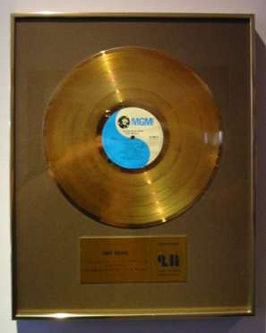
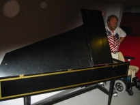
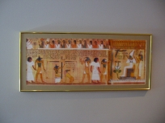
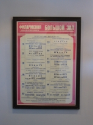
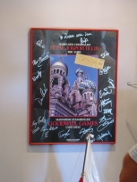
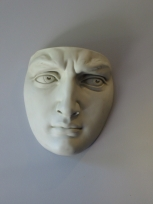
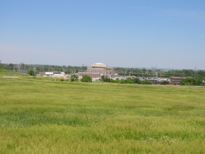

The Legend-News
What We Got Here in this edition of The Legend-News.
- One Hit Wonder, My @$$!
- C.W. McCall Tour 2002
- …and Other Events
- Song A’ Th’ Week: "Wheels of Fortune".
Out and In. At the end of last week's issue, we noted that this issue would contain "the explorations of Lewis and Clark". Well, you'll need to wait until the next issue for that. A few months back we promised to tell you about the "Top 100 One Hit Wonders" as compiled by VH1, and thanks to someone (hi, David!) we are finally remembering to publish that article.
One Hit Wonder, My @$$!
VH1 mixes fact with fiction
A few months ago, the cable television music channel VH1 broadcast a five-part series on the "Top 100 One Hit Wonders": artists who, in the estimation of VH1, had only acheived success with a single song and then disappeared from the music scene. Among those 100 choices was C.W. McCall, whose signature song "Convoy" appears as number 73 in the One Hit Wonder countdown.
William Shatner hosted the series, providing introductions and interstitial comments on the songs of the countdown. Shatner is best known for his own rendition of "Convoy", which he performed in a television commercial for the Internet site PriceLine.com. Shatner also has appeared in many movies and television series, including the three-season wonder Star Trek which originally aired in the 1960s and was the first television series to be cancelled twice.
For those of you who had missed the Top 100 One Hit Wonders, which contained fewer still pictures than a Ken Burns documentary, The Legend-News provides this transcript of the two minute, twenty second segment about "Convoy". In this transcript, Video: indicates a description of the pictures that are being displayed; Narrator: is the voice of the narrator (whose identity we do not know); and Info: is text that was displayed at the bottom of the screen. All song lyrics are shown in italic. Legend-News: indicates scurrilous comments by this publication; those comments are not part of the actual transcript of this segment.
Video: Over a split-screen of 18-wheelers, a trucker on the CB, and C.W. McCall singing, VH1's One Hit Wonders continued.
Info: 73 / C.W. McCall / Convoy
Yeah, that's a big 10-4 there, Pig Pen. We definitely got the front door, good buddy. Mercy sakes alive, looks like we got us a convoy.
Narrator: CB radios had been around for years, but few people other than truckers knew about them. That was until the mid-70s when the trucker assumed a rebel status and a CB obsession swept America. C.W. McCall capitalized on the craze with his 1975 hit, "Convoy".
With the dark of the moon
On the sixth of June
In a Kenworth pullin' logs
Cab-over Pete with a reefer on
And a Jimmy haulin' hogs
Info: First Lady Betty Ford joined the CB craze, using the handle "First Mama."
Info: Rob Sheffield, music journalist.
Sheffield: It was a time when trucker lingo was big. It was right after the big trucking strike in the early '70s which brought a lot of media attention to truckers.
Video: Pictures of Bill Fries as C.W. McCall.
Narrator: But "Convoy" singer C.W. McCall wasn't a real live trucker. In fact, there wasn't even a real live C.W. McCall.
Video: Clips from the first Old Home Bread commercial. C.W. pulls his truck up to the pumps outside the Old Home Café.
Narrator: "Convoy" sprang from a series of television commercials created by advertising executives Bill Fries and Chip Davis. The ads featured a trucker named C.W. McCall.
[Legend-News: Chip Davis was an advertising executive?]
Video: The commercial continues. C.W. is inside the Café, and Mavis (the waitress) takes his order.
Put a patty on the grill and back she came
Says "Tell me, truck man. What's your name?"
I said, "C.W. McCall, and I haul for Old Home.
"You can call me C.W."
Video: Bill Fries, in his appearance on The Mike Douglas Show.
Info: Bill Fries, AKA C.W. McCall.
Bill Fries: It was kinda like a soap opera. We kept writing new installments and everything. What everbody didn't realize was that I was the voice that they heard.
Video: The commercial continues. C.W. McCall drives away from the Old Home Café.
Narrator: With the commercials drawing national attention, the duo released a C.W. McCall album.
Video: A picture of the cover of C.W. McCall's Greatest Hits, but with only the words "C.W. McCall" at the top center of the cover.
[Legend-News: Like they couldn't find a copy of Wolf Creek Pass, the first album; or even Black Bear Road, on which "Convoy" appeared?]
Narrator: More than five million bears, good buddies and rubber ducks made "Convoy" a world-wide phenomenon.
Video: A page from Billboard, showing the "Top Hits" with "Convoy" listed at number one, plus the page from the article in People Magazine. Also, more 18-wheelers on the road.
Info: Bill Fries was elected mayor of Ouray, Colorado in the 1980's.
'Cause we got a little ol' convoy,
Truckin' through the night
Yeah, we got a little ol' convoy,
Ain't she a beautiful sight?
Info: Nile Rodgers, musician/producer
Rodgers: To me, that sorta whole hillbilly, _Smokey and The Bandit_ kinda thing was pretty revolutionary for America.
[Legend-News: We guess that Niles was about five years old when "Convoy" was popular.]
Video: Scenes from The Motion Picture CONVOY. Two 18-wheelers squash a cop car between them; and the Rubber Duck leads the convoy, crashing through a roadblock.
Rodgers: Just the whole concept of the confrontation with the cops, and they're gonna have this huge convoy of trucks and they're gonna smash through stuff.
Narrator: By the time CONVOY the movie was released in 1978, the CB fad had already run out of gas. Bill Fries returned to the advertising game, but Chip Davis stayed in the music business. He sold more than 18 million records, recording as pioneering New Age act Mannheim Steamroller.
Keep the bugs off your glass,
And the bears off your tail
William Shatner: C.W. McCall wasn't the first one hit wonder to strike gold with a novelty song, and he wasn't the last, either. Hang onto your rubber duckie: here's a look at the other novelty songs just novel enough to top the charts.
[Legend-News: But that's a story for someone else to tell. Curiously, the other songs that are mentioned do not include Shatner's own "Lucy In The Sky With Diamonds". Maybe it wasn't novel enough?]
Ken Thompson notes that One Hit Wonder Central has a page on C.W. McCall.
C.W. McCall Tour 2002
Wanted: CJ-5 with four-wheel drive
Friday, June 7 (continued). So we found the home of the C.W. McCall Fand Club, or so we thought. Pictures taken, we continued our journey. Next stop: American Gramaphone!
Now Alan and I knew where A.G. was located, as we'd been there in June 2000. And we had been warned that road construction was nearby, and we might need to take an alternate route to reach A.G. Well, they were right, because our first attempt at travelling south on Mormon Bridge Road was stopped by a large sign that said "Bridge Out". So we make a U, headed back east to U.S. 75, turned south, then west, and eventually north on Mormon Bridge. About a four-mile detour, by my reckoning.
American Gramaphone is basically a large warehouse with offices. Although the actual recording sessions for Mannheim Steamroller usually occur elsewhere, the mixing sessions usually take place here. Also, several of the Mannheim Steamroller videos were made here, including The Christmas Angel.
But out in the warehouse, there's a few racks which contain boxes of CDs. And there are two boxes in particular that were not on the shelf when Alan and I visited in 2000.

Although we were told in 2000 that the existing stock of The Real McCall wouldn't be replenished when it was depleted, that CD has been reordered at least twice since then. Yes, you can still get a genuine copy of The Real McCall: An American Storyteller directly from the publisher. ">Order your copy now!
An album that produces $1,000,000 dollars in sales is deemed to be a "gold" record, and the Recording Industry Association of America (RIAA, aka "We Got The Power, Inc.") awards a "gold record" to the people who are involved with the album.

The gold record for Black Bear Road. Bill has one at his home in Ouray. Here's Chip's, in a hall at American Gramaphone.
Atop a row of cabinets in the lobby, behind the desk of the receptionist, there's a line of Cleo awards. Those are the awards that are presented by the advertising industry to the best commercials. Of course, Chip has a few. Something about a some commercials that he did back in the '70s.
Chip's Clio awards. We know that you can't read the inscriptions on the base, but trust us, the one on the left is for an Old Home Bread commercial.
American Gramaphone also holds many items that have appeared in the videos for Mannheim Steamroller, and momentos of Chip's career.
|
 |
 |
|
|
 |
 |
 |


In the Old Home Bread commercials, there was an appearance by Roy McCoon of Fort Calhoun and His Nuclear Power Plant Boys. When the "C.W. McCall band" toured, they called themselves "the Fort Calhoun Nuclear Power Plant Boys." Well, oddly enough, there is a nuclear power plant in Fort Calhoun, which is about six miles north of Omaha.

The Fort Calhoun Nuclear Power Plant, north of Omaha.
To be continued…
…and Other Events
An excuse to put your pedal to the metal
The World's Largest Truck Convoy in Orlando, Florida, on July 20. Organized by ponsored by Norm Schneiderhan of the Orange County Sheriff, for the benefit of Special Olympics, this will be the largest gathering of rigs anywhere.
By the time that you read this, The Heartland Tour will be over, and the Collins family ought to back home in Midland Park, New Jersey. Sean, Jackie, and their children David, Jonathan, Megan and Daniel are raising money for the Cystic Fibrosis Foundation, and attempting to get an entry in the Guinness World Records, by traveling through the 48 contiguous States in the shortest possible distance.
Song A’ Th’ Week
Words without music. Call 'em poems.
If you're never home, then your truck can't be repossessed, right?
Wheels Of Fortune
(Terry Skinner, J.L. Wallace)
From the album
C.W. McCall & Co.
[Chorus]
(Gotta keep these wheels)
Wheels of fortune rollin'
It don't matter where we're goin'
East or west or south to Tennessee
(Gotta keep these wheels)
Wheels of fortune movin'
Keep on truckin', keep on movin'
Gotta stay ahead of the finance company
Well, I was down-and-out until this friend a' mine
He said, "I got somethin' here, guaranteed ta change yer luck.
"With just a few thousand dollars you can get on time,
"I can put you in a brand-new diesel truck."
He says, "You can make a fortune in a year or two
"It's easy; all ya haveta do is drive."
Well, I signed my name and I took the keys and then I knew:
I was gonna be the richest man alive!
[Chorus]
(Gotta keep these wheels)
Wheels of fortune rollin'
It don't matter where we're goin'
East or west or south to Tennessee
(Gotta keep these wheels)
Wheels of fortune movin'
Keep on truckin', keep on movin'
Gotta stay ahead of the finance company
Now, I ain't seen my lady in a month or two
This old rig may cost me my family
'Cause when I truck on home, you know just what they do?
They treat me just like I was company
Now I'm lost and lonely on this Interstate
My CB's broke and I ain't got a dime
I got a payment due and the finance comp'ny just won't wait
I gotta keep this rig a-movin' all the time
[Chorus]
(Gotta keep these wheels)
Wheels of fortune rollin'
It don't matter where we're goin'
East or west or south to Tennessee
(Gotta keep these wheels)
Wheels of fortune movin'
Keep on truckin', keep on movin'
Gotta stay ahead of the finance company
Gotta stay ahead of the finance company
Next Issue
The explorations of Lewis and Clark. (Where have we heard that before?)
Due to our vacation schedule, the next issue will be published on July 29. Yes, we're publishing on the fifth Monday of the month, despite our previous avowal to take a break. But don't worry, 'cause we'll skip publishing on August 5 and the issue after the next will be August 19. We run the company, so we make the rules. Your money back if you're not completely satisfied.
The Legend-News is published fortnightly — unless the fortnight is the fifth Monday, in which case it's published fortnightly-and-a-half — by TechRen Enterprises, do-wah-ditty, ditty-dum, ditty-doo. Contents Copyright 2002 TechRen Enterprises, except for anything that we borrowed from someone else. Thanks to Bill Fries and Chip Davis for the words and music, and thanks to a Large Multinational Record Company That We Can't Name Because They Might Notice Us for not suing our pants off. "Jaffa, kree!"